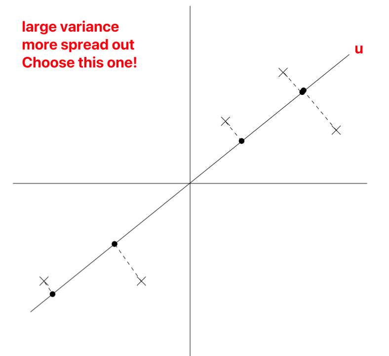
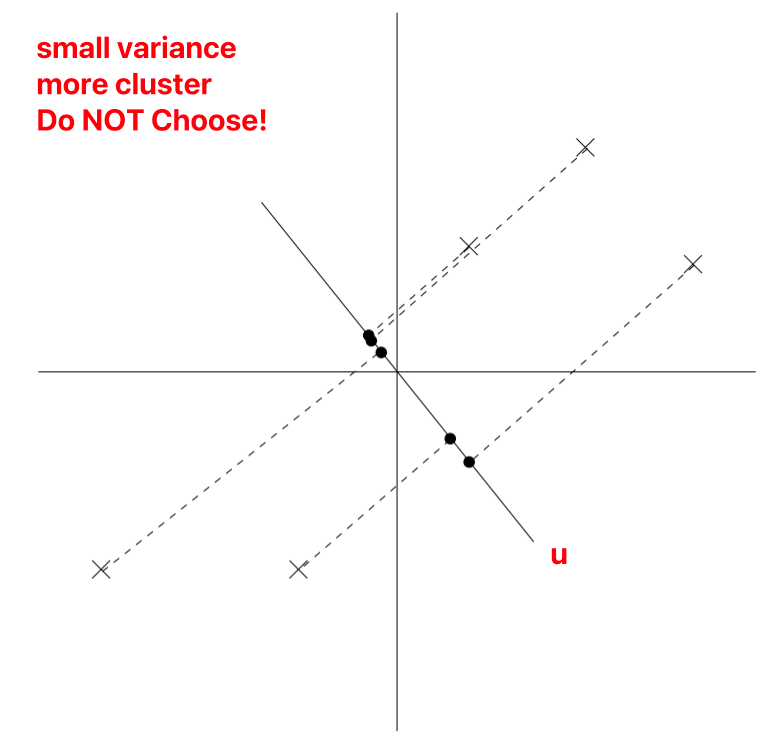

BME | Machine Learning - Principal Component Analysis (PCA)
Concept
Purpose: Dimensionality Reduction
input ,
output
,
Here, denotes the number of samples (total ), and denotes the number of features (total ).
Preprocessing｜Data Preprocessing
Purpose: Normalize all features to data with mean==0 and variance==1
Method:
If we can ensure that different features have the same scale, it can be represented as:
? Parameter estimation utilizes the EM algorithm
Computing Major Axis of Variation


is a unit vector, represents the sample, denoted as different points on the graph.
During projection (reducing 2D to 1D), to retain more information, we choose the projection data’s variance, i.e., the projection points’ distribution that is more uniform.
As normalization has been performed, must necessarily pass through the origin.
Maximizing Projection Variance
The projection of point onto vector is ,
Calculation of Projection:
Calculation of Variance:
Variance of all points projected onto a single :
If , the principal eigenvector can be simplified as , i.e.,
Where represents the first eigenvalue of (principal eigenvalues), and in this case, represents the 1st principal eigenvector of .
Summary
The best 1D direction for is the 1st eigenvector of covariance, i.e., . PyTorch’s torch.lobpcg function can be utilized.
If we want to project data to 1D, select to be the principal eigenvector of .
Projected data after reducing dimensions: , where represents the first eigenvectors, with size (d, k). Here, goes from dimensions to .
If we aim to project data into dimensions:
Method 1: Choose to be the top eigenvectors of .
Method 2:
Here, represents the reconstruction example given by basic components.
Note: The content in this blog is class notes shared for educational purposes only. Some images and content are sourced from textbooks, teacher materials, and the internet. If there is any infringement, please contact aursus.blog@gmail.com for removal.